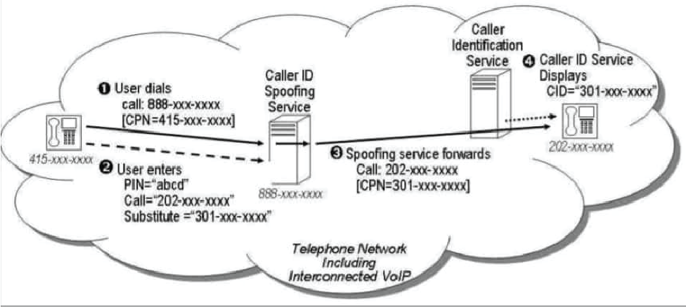
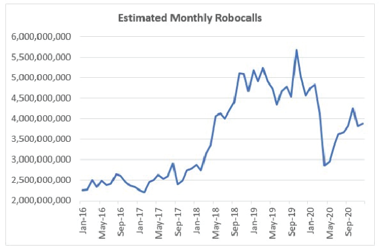

All you need to know about Spoofing
"Spoofing" a phone number is a tactic of changing the phone number seen on a caller ID. Companies like Spoofcard allow users to purchase credits towards call time used in a simple smartphone app. Users input the number they want to call, and what number they want displayed on the other end — initiating an untraceable call that leaves the other person only seeing the spoofed caller ID.
A related video start at 2:00
Spoofing can trick one into thinking that they are getting a call from a government agency, business, or even someone from your local area. If you've ever received a nuisance call from a phone number that mimics your own, then it means that the scammer used the neighbor spoofing approach to trick you into picking up the phone. These scam companies or individuals understand that many people no longer answer calls from 1-800 numbers, numbers with unfamiliar area codes, or that display no caller ID information (sometimes this comes up as “unknown” on caller IDs). By spoofing local phone numbers or information into called ID devices, scammers hope to entice the recipient to answer a call they would otherwise decline. Spoofed numbers have proven effective at getting more of us to pick up the phone, leading to a higher occurrence of number spoofing scams
Spammers carry out spoofing using a VoIP (Voice over Internet Protocol) service or IP phone, both of which use the internet to make phone calls. When phone number spoofing first surfaced, it required in-depth knowledge of telephony equipment that tended to be very expensive. More recently, open-source software has made it possible for almost anyone to spoof calls with little cost or technical knowledge.
Some spoofing services work just like a prepaid calling card. Customers pay upfront for a PIN number that they use to place calls. Then they dial the number provided by the service provider, enter their pin, enter the outgoing call number and then enter the number they want to appear as their caller ID. The call is then bridged or transferred and shows up on the recipient’s phone with the spoofed number chosen by the caller.
Unfortunately, getting numbers is relatively simple. Phone number and name combinations are not typically private information, so scammers can usually scrape this data from public archives. Phone scammers can also purchase stolen data from data breaches, or steal phone numbers and other data from poorly-secured databases.
Stolen data is exceptionally cheap to purchase on dark web marketplaces. For example, scammers can quickly locate and buy 2 million+ stolen records from Walmart customers on dark web marketplaces for as little as $5 USD. With the average reported financial loss for phone scams in the US exceeding $500, scammers have no problem recouping their costs.
U.S. robocalls declined under the lockdowns of COVID-19, with an estimated 45.9 billion robocalls nationwide in 2020, marking an almost 22% decrease from the 58.5 billion robocalls recorded in 2019. This total is roughly 4% below the 47.8 billion robocalls received in 2018, yet still over 50% higher than the 30.5 billion robocalls in 2017.
Even a pandemic cannot make the robocall problem disappear. While robocalls dipped to 2020's lowest levels in April, that was still higher than June 2018, barely two years earlier, and still consisted of between 50%-60% spam and telemarketing calls.
As of 2020, scammers are still most likely to contact you by phone. However, they are increasingly using text messages to do so. (Source: FTC) In 2020, scam phone calls cost their victims $182 on average (Source: Hiya State of the Call 2021) By the end of 2019, over 80 percent of all scam calls in the US were using area codes local to the recipient. (Source: First Orion)
References:
https://www.comparitech.com/blog/information-security/phone-spam-statistics/
https://www.comparitech.com/blog/information-security/number-spoofing-scams/
https://www.makeuseof.com/how-do-spam-callers-spoof-phone-numbers-to-appear-local/
https://www.kaspersky.com/resource-center/preemptive-safety/phone-number-spoofing
https://www.businessinsider.com/phone-number-spoofing-2016-2